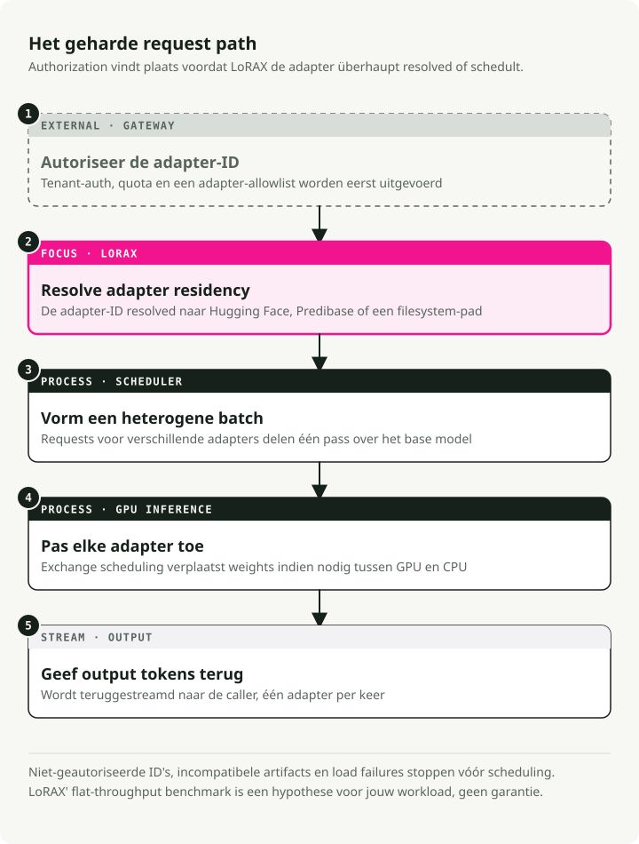
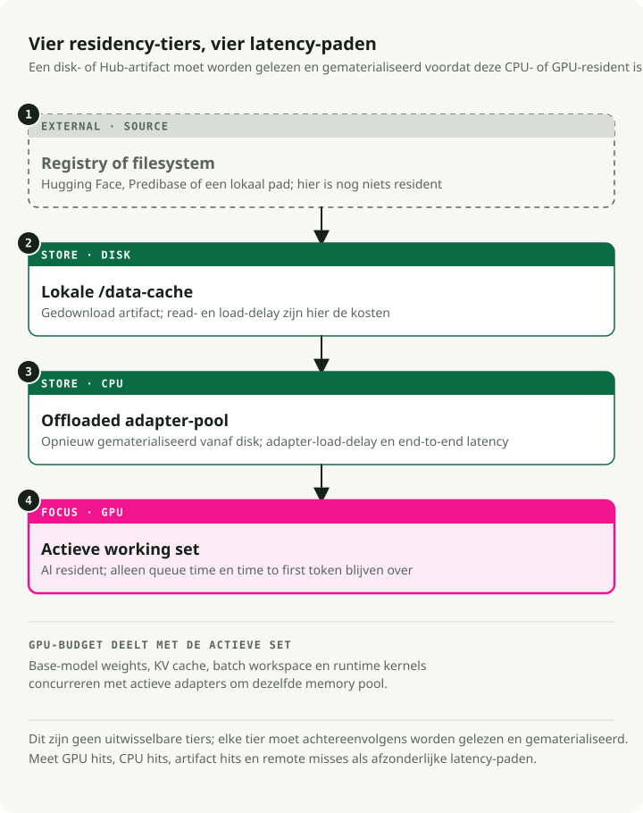

Automatische vertaling
Dit artikel is automatisch vertaald vanuit de oorspronkelijke Engelse versie.
LoRAX Servicegids: Duizenden LoRA-adapters op Kubernetes
Het serveren van tientallen gefineerde grote taalmodellen vereiste vroeger één GPU per model. LoRAX (LoRA eXchange) houdt één basismodel in geheugen en wisselt per verzoek lichtgewicht LoRA-adapters snel uit. De kosten per token blijven redelijk constant naarmate er meer modellen worden gefineerd.
Deze gids behandelt wat LoRA is, wanneer je voor LoRAX kiest in plaats van vLLM, hoe je het met de officiële Helm-chart op Kubernetes kunt implementeren, en hoe je de REST-, Python- en OpenAI-compatibele APIs kunt gebruiken.
Kort samengevat: LoRAX is nuttig wanneer veel LoRA-adapters één basismodel delen en een efficiënte multi-tenant-dienstverlening vereisen. De moeilijkste aspecten zijn routering van adapters, geheugenbeheer, batchverwerking, autoscaling en observabiliteit, en niet de wiskunde achter LoRA zelf.
Achtergrond: wat is LoRA?
Low-Rank Adaptation (LoRA) bevriest de vooraf getrainde modelgewichten en voegt kleine matrices met rangontbinding toe aan elke Transformer-laag. In plaats van het hele model opnieuw te trainen, traint men een klein aantal “diffs” die het nieuwe gedrag weergeven.
Een volledige fine-tuning van een 7B-model resulteert in een bestand van 20GB+. Een LoRA-adapter voor hetzelfde model weegt ongeveer 100MB. Dit verschil maakt dynamische dienstverlening mogelijk: je kunt duizenden adapters op schijf opslaan en er binnen milliseconden één in het GPU-geheugen laden.
Het probleem dat LoRAX oplost
De traditionele manier van multi-model-dienstverlening is kostbaar. Elk gefineerde model heeft zijn eigen GPU-geheugen nodig, waardoor het serveren van 50 klantspecifieke modellen 50 aparte implementaties vereist – of in ieder geval 50 keer zoveel geheugen. De kosten stijgen lineair met elk nieuw variant.
LoRAX is een Apache 2.0-project van Predibase. Het breidt dit uit. Hugging Face Text Generation Inferentieserver Dankzij dynamisch laden van adaptoren, gerangschikte opslag van gewichten en batchverwerking van meerdere adaptoren kun je honderden LoRA-adaptoren specifiek voor verschillende gebruikers op één GPU van de Ampere-klasse hosten, zonder dat de doorvoersnelheid of vertraging toenemen.
Het trucje: fijnafstelling met LoRA genereert kleine gewichtsveranderingen in plaats van volledige kopieën van het model. LoRAX houdt alleen het basismodel in de GPU en injecteert de adaptergewichten op verzoek. Adaptoren die niet worden gebruikt, kosten geen VRAM.
Hoe het werkt
Dynamisch laden van adaptoren
De adaptergewichten worden rechtstreeks vóór elke aanvraag geïnjecteerd. Het basismodel blijft in het GPU-geheugen, terwijl de adaptoren op het moment van gebruik worden geladen, zonder andere aanvragen te blokkeren. Je kunt duizenden adaptoren catalogiseren, maar je betaalt alleen voor het geheugen dat wordt gebruikt door de adaptoren die actief verkeer verwerken.
Gerangschikte opslag van gewichten
LoRAX verdeelt de adaptoren over drie lagen: GPU-VRAM voor vaak gebruikte adaptoren, CPU-RAM voor minder frequente adaptoren, en schijfopslag voor langzaam toegankelijke gegevens. Deze hiërarchie voorkomt geheugenproblemen en zorgt ervoor dat de swapprocessen snel genoeg verlopen zodat gebruikers dit niet merken.
Continu batchverwerken van meerdere adaptoren
Hier verandert LoRAX het batchgedrag. Het breidt continu batchverwerking uit zodat verschillende adaptoren parallel kunnen worden verwerkt, waardoor aanvragen voor verschillende fijnafstellingen dezelfde forward-pass kunnen delen. Benchmarkresultaten van Predibase tonen aan dat het verwerken van 1 miljoen tokens over 32 verschillende adaptoren ongeveer even veel tijd kost als het verwerken van 1 miljoen tokens met één model.
De onderliggende TGI-technologie
LoRAX is gebaseerd op Hugging Face’s Text Generation Inference (TGI), waardoor je de optimalisaties van TGI overneemt: FlashAttention 2, paginatiegebonden aandacht, SGMV-kernen voor inferentie met meerdere adapters, en gestreamde responsen. Het is dus TGI met dynamische wisseling van adapters.
De kosten per token blijven vrijwel constant
De grafiek maakt dit duidelijk. Gereserveerde implementaties (donkergrijs) schalen lineair: verdubbel je de modellen, dan verdubbelen ook de kosten. LoRAX (oranje) houdt de kosten per token nagenoeg constant naarmate je meer adapters toevoegt. Zelfs gefineerde API’s die worden gehost door aanbieders zoals OpenAI (lichtgrijs) kunnen dit niet evenaren bij meermodellenvraagstukken.

Cost per miljoen tokens naarmate er meer gefineerde modellen worden gebruikt. LoRAX blijft vrijwel constant bij batchverwerking met meerdere adapters; gespecialiseerde implementaties schalen lineair. Bron: LoRAX GitHub-repo### Verzoekstroom

Wanneer LoRAX te gebruiken is
LoRAX is zinvol in een aantal specifieke situaties.
- Multi-tenant SaaS. U bouwt een platform waarbij elke van de 500 klanten een chatbot krijgt die is aangepast aan hun eigen gegevens. De traditionele aanpak vereist 500 afzonderlijke modelimplementaties. LoRAX kan alle 500 chatbots bedienen vanaf één GPU door de relevante adapter te laden zodra er een verzoek van een klant binnenkomt.
- Routeeringsoplossing voor domeinspecifieke experts. U houdt gespecialiseerde LLM’s bij voor rechtspraak, geneeskunde, financiën en techniek. In plaats van vier aparte 13B-implementaties, gebruikt LoRAX één basismodel LLaMA 2 13B en stuurt het het verzoek door naar de juiste adapter, afhankelijk van het desbetreffende domein.
- Snel experimenteren. Testt u 10 verschillende aanpassingsmethoden in productie? Zet LoRAX één keer op en wissel tussen de varianten door alleen de benodigde parameters aan te passen.
adapter_idparameter. Er zijn geen infrastructuurveranderingen of herstarten van diensten nodig. - Implementaties met beperkte resources of op edge-locaties. Eén NVIDIA A10G kan een gequantiseerd 7B-basemodel samen met tientallen modelspecifieke adapters ondersteunen, in plaats van één GPU per model.
Architectuur: geheugenhiërarchie en aanvraagplanning
LoRAX is gebaseerd op een drie-laags geheugenhiërarchiesysteem. Het begrijpen hiervan helpt u om de prestaties te voorspellen en de benodigde capaciteit te plannen.

LoRAX beschouwt elke adapter als een lichtgewicht “view” op het gedeelde basismodel. De scheduler bundelt verzoeken zodat het serveren van 32 verschillende adapters net zo snel kan gaan als het serveren van één, zelfs bij een doorvoersnelheid van een miljoen tokens. Adapters wegen doorgaans tussen 10 en 200 MB, in vergelijking met volledige modellen die meerdere gigabytes beslaan.
LoRAX implementeren op Kubernetes
LoRAX wordt geleverd met Helm-charts en Docker-images, waardoor de implementatie op Kubernetes eenvoudig is.
Voorwaarden
Je hebt nodig:
- Een Kubernetes-cluster met NVIDIA GPUs (Ampere-generatie of nieuwere modellen: A10, A100, H100) NVIDIA Container Runtime geconfigureerd op GPU-knooppunten
kubectlenhelmlokaal geïnstalleerd – Persistent opslag voor adaptercaches; monteer een PersistentVolume hiervoor/databinnen de pod
Snelle start met het officiële Helm-chart
Helm Het is de pakketbeheerder voor Kubernetes. Het bundelt alle Kubernetes-resources die een applicatie nodig heeft (Deployments, Services, ConfigMaps, etc.) in één enkele “chart”, zodat u het geheel met één commando kunt implementeren in plaats van handmatig tientallen YAML-bestanden te beheren.
Predibase heeft eind 2024 hun openbare Helm-repository afgesloten, dus de ondersteunde werkwijze is om het LoRAX-repository te klonen en de chart vanaf de schijf te installeren. Voer deze commando’s uit vanaf uw werkstation:
# Clone the LoRAX repository and switch into it
git clone https://github.com/predibase/lorax.git
cd lorax
# Make sure kubectl can talk to your cluster
kubectl config current-context
kubectl get nodes
# Build chart dependencies (generates charts/lorax/charts/*.tgz)
helm dependency update charts/lorax
# Optional: render manifests locally to verify everything is templating
helm template mistral-7b-release charts/lorax > /tmp/lorax-rendered.yaml
# Deploy with default settings (Mistral-7B-Instruct)
helm upgrade --install mistral-7b-release charts/lorax
# Watch the pod come up
kubectl get pods -w
# Check logs to see model loading progress
kubectl logs -f deploy/mistral-7b-release-lorax
De grafiek toont een Deployment (standaard één replica) en een ClusterIP Service die luistert op poort 80. Tijdens de eerste start wordt het basismodel gedownload van Hugging Face en in het GPU-geheugen geladen, wat afhankelijk van uw netwerk en GPU enkele minuten kan duren. Bij latere herstarten worden de opgeslagen gewichten uit het persistente volume opnieuw gebruikt.
Tip: Als
helm upgrade --installkeert terugKubernetes cluster unreachable, uw kubeconfig-context verwijst naar een cluster dat offline is. Start uw lokale cluster (Docker Desktop, kind, minikube) of schakel over naar een bereikbare context.kubectl config use-context. In uitvoeringkubectl get nodesVoor het implementeren wordt gecontroleerd of de API-server beschikbaar is.
Het basismodel en de schaalbaarheid aanpassen
U kunt een ander basismodel instellen of de benodigde resources aanpassen door een aangepaste waardenbestand te maken. Hier is een voorbeeld. llama2-values.yaml:
# Use LLaMA 2 7B Chat instead of Mistral
modelId: meta-llama/Llama-2-7b-chat-hf
# Enable 4-bit quantization to save VRAM
modelArgs:
quantization: "bitsandbytes"
# Scale to 2 replicas for high availability
replicaCount: 2
# Request exactly 1 GPU per pod
resources:
limits:
nvidia.com/gpu: 1
Deploy met uw aangepaste configuratie:
helm upgrade --install -f llama2-values.yaml llama2-chat-release charts/lorax
Voer die commando's uit vanuit de gekloneerde lorax/ repository zodat Helm de chart-map kan vinden.
LoRAX ondersteunt de populaire open-source modellen direct uit de doos: LLaMA 2, CodeLlama, Mistral, Mixtral, Qwen en anderen. Controleer de lijst met modelcompatibiliteit voor de nieuwste toevoegingen.
Het blootstellen van de service
De standaard Service-type is ClusterIP, waarmee alleen toegang mogelijk is van binnenuit de cluster. Voor externe verkeersstromen kun je kiezen uit:
- Het maken van een LoadBalancer Service (bij cloudproviders)
- Het opzetten van een Ingress met TLS-terminatie
- Het plaatsen van een API-gateway er voor om authenticatie en rate limiting te realiseren
Opruimen
Wanneer je klaar bent met testen, maak dan de GPU-resources vrij:
helm uninstall mistral-7b-release
Dit verwijdert de deployment, de service en alle pods. De opgeslagen modelgewichten blijven in het PersistentVolume, tenzij je deze apart verwijdert. /generate De endpoint accepteert JSON-ladingen met je prompt en optionele parameters. Het gebruik van het base-model zonder enige adapter:
# Basic request to the base model (no adapter)
curl -X POST http://localhost:8080/generate \
-H "Content-Type: application/json" \
-d '{
"inputs": "Write a short poem about the sea.",
"parameters": {
"max_new_tokens": 64,
"temperature": 0.7
}
}'
De reactie bevat de gegenereerde tekst en metadata zoals het aantal tokens en de tijdsduur.
Voeg een toe adapter_id parameter om een gefineerde model te richten. Hier is een voorbeeld met een adapter die gespecialiseerd is in wiskunde:
curl -X POST http://localhost:8080/generate \
-H "Content-Type: application/json" \
-d '{
"inputs": "Natalia sold 48 clips in April, and then half as many in May. How many clips did she sell in total?",
"parameters": {
"max_new_tokens": 64,
"adapter_id": "vineetsharma/qlora-adapter-Mistral-7B-Instruct-v0.1-gsm8k"
}
}'
Op de eerste oproep met een nieuw adapter_id, LoRAX downloadt de adapter van Hugging Face Hub en cacheert deze daar. /data. Volgende verzoeken maken gebruik van de opgeslagen versie. U kunt ook adapters laden van lokale paden door in te stellen "adapter_source": "local" naast een bestandspad.
Python-client
Voor programmatische toegang, installeer de lorax-client package:
pip install lorax-client
De client omhult de REST API met een eenvoudige interface:
from lorax import Client
# Connect to your LoRAX instance (default port 8080)
client = Client("http://localhost:8080")
prompt = "Explain the significance of the moon landing in 1969."
# 1. Generate using the base model (no adapter loaded)
base_response = client.generate(prompt, max_new_tokens=80)
print("Base model:", base_response.generated_text)
# 2. Generate using a fine-tuned adapter
# The adapter_id can be a Hugging Face repo ID or a local path
adapter_response = client.generate(
prompt,
max_new_tokens=80,
adapter_id="alignment-handbook/zephyr-7b-dpo-lora",
)
print("With adapter:", adapter_response.generated_text)
De client ondersteunt streaming, decodingsparameters (temperature, top-p, repetition penalty) en details op tokenniveau. Zie de Clientreferentie voor geavanceerd gebruik.
OpenAI-compatibele endpoint
LoRAX implementeert de OpenAI Chat Completions API onder de /v1 pad. Hierdoor kun je LoRAX integreren in tools die het API-formaat van OpenAI verwachten: LangChain, Semantic Kernel of zelfontworpen applicaties. model Veld om aan te geven welke adapter moet worden geladen:
import openai
# Point the OpenAI client at LoRAX
openai.api_key = "EMPTY" # LoRAX doesn't require an API key by default
openai.api_base = "http://localhost:8080/v1"
# The model parameter becomes the adapter_id
# This allows seamless integration with tools like LangChain
response = openai.ChatCompletion.create(
model="alignment-handbook/zephyr-7b-dpo-lora",
messages=[
{"role": "system", "content": "You are a friendly chatbot who speaks like a pirate."},
{"role": "user", "content": "How many parrots can a person own?"},
],
max_tokens=100,
)
print(response["choices"][0]["message"]["content"])
Er volgen twee praktische toepassingsgebieden:
- Directe vervanging. Migreer bestaande applicaties van de door OpenAI gehoste modellen naar uw eigen infrastructuur door slechts één configuratielijn aan te passen.
- Integratie met tools. Gebruik LoRAX met elk framework dat al de OpenAI-API ondersteunt, zonder dat er speciale adaptercode nodig is.
De eerste aanvraag naar een nieuwe adapter heeft een hogere vertraging, terwijl LoRAX deze downloadt en laadt. Plan dit in gebruikersgerichte applicaties voor door populaire adapters alvast te laden of een laadstatus weergeven.
Afwegingen
Waarin LoRAX sterk is
- Veel modellen op één GPU. Honderden of duizenden fijngetunede modellen op één enkele GPU in plaats van één implementatie per model. De kosten blijven vrijwel constant naarmate je meer adapters toevoegt.
- Geen ongebruikte geheugenruimte. Adapters worden op verzoek geladen. Ongebruikte modellen kosten geen VRAM. Je kunt een catalogus met 1.000+ gespecialiseerde modellen bijhouden en alleen betalen voor de weinige modellen die actief verkeer verwerken.
- Consistente doorvoersnelheid. Continu batchverwerking met meerdere adapters houdt de vertraging en doorvoersnelheid dicht bij die van enkelvoudige modelimplementaties. Predibase-benchmarks tonen aan dat het parallel verwerken van 32 adapters nauwelijks extra overhead oplevert vergeleken met één adapter.
- Onderliggend TGI-platform. Gebaseerd op Hugging Face TGI, zodat je FlashAttention 2, paginated attention, streaming en SGMV-kernen voor inferentie met meerdere adapters krijgt.
- Volledig operationeel. Docker-images, Helm-charts, Prometheus-metingen en OpenTelemetry-tracing. Gebaseerd op Apache 2.0, dus zonder commerciële beperkingen.
- Brede ondersteuning voor modellen. Werkt met LLaMA 2, CodeLlama, Mistral, Mixtral, Qwen en andere modellen. Ondersteunt kwantisatie (4-bit via bitsandbytes, GPTQ, AWQ) om de geheugennodigheid te verminderen.
Beperkingen
- Alleen LoRA. Alle adapters moeten afkomstig zijn van een fine-tuning in LoRA-stijl van hetzelfde basismodel. Volledige fine-tuningsprocessen die zelfstandige modellen opleveren, werken niet zonder conversie. Verschillende basisarchitecturen vereisen aparte LoRAX-implementaties.
- Koude start. De eerste aanvraag na het opstarten laadt het basismodel in de GPU-geheugen (30–90 seconden voor grotere modellen). De eerste aanvraag naar een nieuwe adapter heeft vertraging door het downloaden van gegevens van Hugging Face. Plan hier rekening mee door gezondheidscontroles en voorlopig laden uit te voeren.
- Cache-problemen bij scherpe toename van het verkeer. Als het verkeer plotseling tientallen verschillende adapters bereikt, moet LoRAX gewichten heen en weer verschuiven tussen GPU, CPU-RAM en schijf. Het verwisselen van adapters uit RAM duurt ongeveer 10 ms, maar een zeer groot werkgeheugen kan tijdelijke vertragingen veroorzaken. Houd de GPU-geheugengebruik en de cache-hitratio’s in de gaten.
- Snel ontwikkeld project. LoRAX is eind 2023 afgeleid van TGI en verandert snel. Reken op frequente updates en af en toe brekende veranderingen, aangezien het zich baseert op de ontwikkelingen in TGI. Pin versies in productieomgevingen.
LoRAX versus vLLM
vLLM Het is een andere high-throughput serving-engine, die onlangs multi-LoRA-ondersteuning heeft gekregen. Beide lossen verschillende problemen op.
| Functie | LoRAX | vLLM |
|---|---|---|
| Hoofdfocus | Massale schaal: honderden of duizenden adapters | Hoge doorvoer: maximale aantal tokens per seconde voor minder actieve adapters |
| Architectuur | Dynamische uitwisseling; intensieve afhandeling door de CPU/schijf | Batchverwerking afgestemd op gelijktijdige uitvoering van actieve adapters |
| Ideaal voor | Long-tail SaaS: duizenden huurders, sporadisch gebruik | Hoogverkeersniveaus: 5–10 intensief gebruikte adapters |
| Basis | Hugging Face TGI | Geavanceerde PagedAttention-engine |
Kies voor LoRAX wanneer je een grote hoeveelheid adapters hebt (één per gebruiker, waarvan de meeste het grootste deel van de tijd niet actief zijn) en waarbij gestage opslagcaching zinvol is. Kies voor vLLM wanneer je maar weinig zeer actieve adapters hebt en brute doorvoersnelheid de hoogste prioriteit heeft.
Beginnen
Een praktische roadmap van prototype naar productie:
1. Begin met kleine stappen
Zet LoRAX in gebruik met het basismodel dat u al gebruikt, samen met 3–5 representatieve adapters. Controleer of het laden van de adapters correct werkt en meet de basislatentie voor uw werkload.
2. Meten en profileren
- Houd de hitratio’s van de adaptercache en het GPU-geheugen bij onder realistisch verkeer.
- Identificeer de meest gebruikte adapters (de bovenste 20% op basis van het aantal verzoeken) en overweeg om deze bij het opstarten alvast te laden.
- Meet de vertragingen P50, P95 en P99 voor zowel gecacheerde als koude adapterladingen.
3. Optimalisatie voor uw werklast
- Als een paar adapters zeer populair zijn, verhoog dan de toewijzing van GPU-geheugen zodat er meer van deze adapters actief kunnen blijven.
- Als het gebruik verspreid is over honderden adapters, stel dan de gestapelde cache in om RAM en schijf optimaal tegen elkaar af te wegen.
- Gebruik kwantisatie (4-bit bitsandbytes of GPTQ) wanneer de VRAM beperkt is.
4. Horizontale schaling
Zodra het gedrag van één instance goed begrepen is, voeg replicaten toe voor hoge beschikbaarheid. Plaats een load balancer ervoor die de verkeerstoevoer routeert op basis van adapter_id Dus verzoeken voor dezelfde adapter gaan naar dezelfde replica. Dit verbetert de cache-localiteit.
5. Monitoren
Stel dashboards in voor de GPU-utilisatie, metrics van de adaptercache en vertragingen van verzoeken, opgesplitst per adapter. Houd in de gaten of er sprake is van cache-thrashing tijdens pieken in het verkeer en passeer de schaalbaarheid dienovereenkomstig aan.
Met LoRAX wordt het uitvoeren van N fine-tuningsprocessen een routingsprobleem op één GPU in plaats van een provisioningprobleem op N GPUs.
Belangrijkste conclusies
- Het serveren via LoRA-adapters is een routings- en geheugenbeheersprobleem.
- Eén basismodel met meerdere adapters kan goedkoper zijn dan één volledig gefineerd model per gebruiker.
- Batching werkt alleen als de serverlaag de plaatsing van adapters en de swapecost begrijpt.
- Kubernetes biedt operationele voordelen, maar alleen als de metrics latency op adapterniveau, cachehits en fouten weergeven.
Referenties
- Predibase LoRAX op GitHub - Runtime voor het serveren van meerdere LoRA’s. LoRA-artikel - lage-rangadaptatie. Documentatie voor Hugging Face PEFT - Parameter-efficiënt fijnafstellen. Kubernetes-documentatie - Containerorchestration.